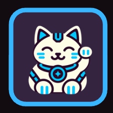

● Currently building
Project Iskater
A game simulator that explores real-world gambling through a realistic family scenario, connecting game decisions with everyday family life.


My skills · Always a work in progress
I like figuring out how things work, asking what could go wrong, and building something useful with what I learn.
Look closer. Connect the dots.
Digital Forensics is my specialization at NU Manila. I’m interested in how digital evidence helps explain what happened, and the careful thinking it takes to make sense of it.
BS Computer Science · National University – Manila
Understand the system. Question the gaps.
Cybersecurity and ethical hacking keep me curious about how systems can fail, and how understanding those weaknesses can help make them safer.
The connection between understanding a system and protecting it.
Turn an idea into something real.
My projects are where the learning gets hands-on: Java with EquiEat, interface work with ConsisFit, C# with Payroll System, and HTML, CSS, and JavaScript here on my portfolio.
Learning by building. A selection of public work, university collaborations, and what I’m working on now.
A game simulator that explores real-world gambling through a realistic family scenario, connecting game decisions with everyday family life.

A smart ration system designed to distribute relief goods equitably. A team final project at National University that I contributed to.
View public repositoryA collaborative final project at National University. My public repository documents work on improving its user interface.
View public repositoryA C# payroll system project. Explore the implementation and source code on GitHub.
View public repository ↗My corner of the web: a responsive portfolio with three themes, public projects, and a way to get in touch.
View public repository ↗Have a question or an idea to share? Let’s start a conversation.
Reach me directly at
carladriantcarbaquil@gmail.comThe form opens a prefilled Gmail draft. Review your message and press Send in Gmail, or use the email link to open your preferred email app.